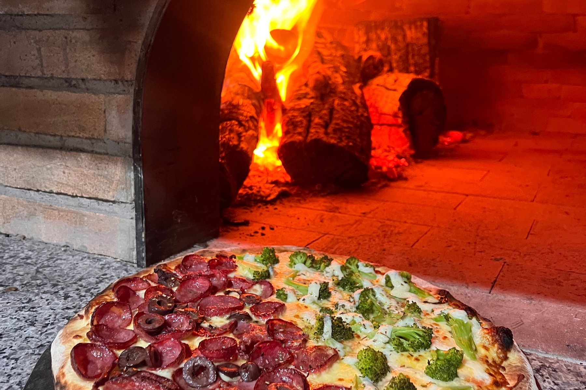
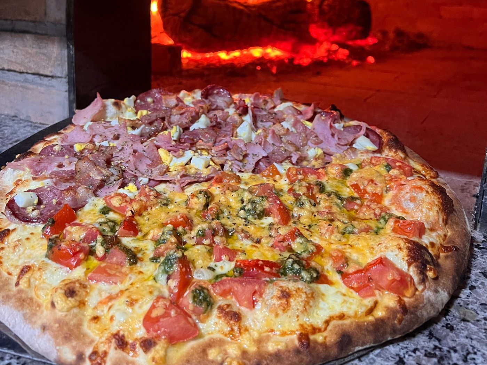

Fermentação lenta
A massa descansa dois dias antes de virar pizza. É o que deixa ela leve, fácil de digerir e com aquele alvéolo na borda.

Garopaba · Santa Catarina
Massa de fermentação lenta, forno a lenha e ingredientes escolhidos a dedo. É assim desde 1988 — e continua sendo.
Quarta a segunda, das 18h às 23h
A casa
A Pizza 38 abriu em 1988, quando Garopaba ainda era vila de pescadores e quase ninguém entregava pizza em casa. A receita da massa não mudou: farinha, água, sal, fermento e tempo — muito tempo.
O que mudou foi tudo em volta. A cidade cresceu, o verão encheu, e a casa continuou fazendo uma pizza de cada vez, na boca do forno.

O cardápio
Toda pizza sai do forno a lenha, com a mesma massa. O preço é o do sabor mais caro que você escolher — meia a meia nunca soma duas.
Por que a massa é diferente
A massa descansa dois dias antes de virar pizza. É o que deixa ela leve, fácil de digerir e com aquele alvéolo na borda.
Lenha, tijolo e calor de verdade. A pizza assa em poucos minutos e sai com a marca do fogo — coisa que forno elétrico não faz.
Está no brasão desde o primeiro dia. Quem é de Garopaba sabe; quem chega agora pergunta — e a resposta a gente conta pessoalmente.

Onde nos achar
Quarta a segunda, das 18h às 23h
Centro de Garopaba — SC.
Endereço completo na página de contato.